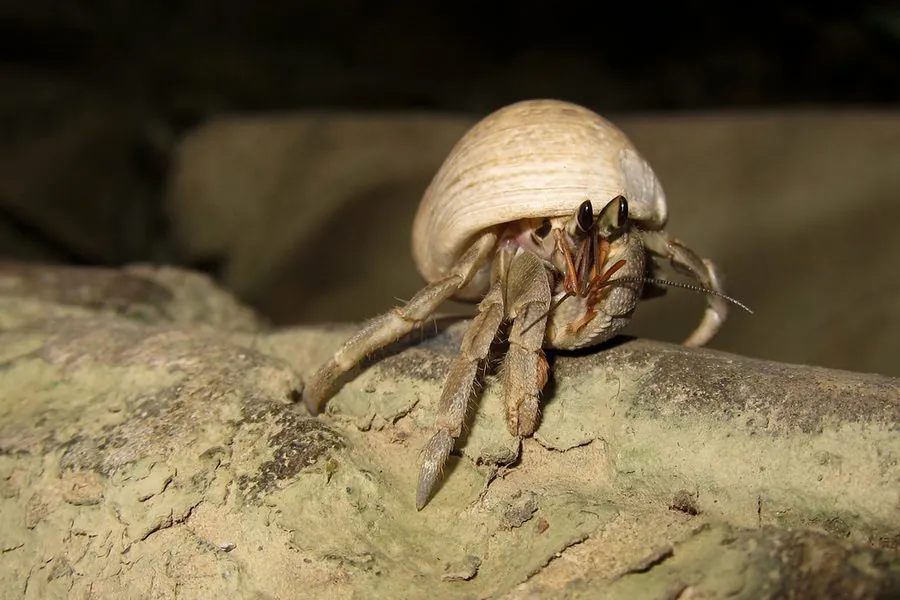

甲壳动物 · 动物界
灰白陆寄居蟹 Coenobita rugosus

生活在海岸林和沙滩附近的陆寄居蟹，背着螺壳成群活动，靠鳃腔储水在陆地生活，是常见的观赏宠物。
- 分类
- 门节肢动物门纲软甲纲目十足目科陆寄居蟹科属陆寄居蟹属
- 栖息环境
- 热带海岸林、沙滩和红树林附近，夜间活动
- 地理分布
- 印度—太平洋海岸，包括中国南海、东南亚和澳大利亚
- 保护级别
- 暂无评估；受宠物贸易和海岸开发影响
物种志
灰白陆寄居蟹体长约 2–4 cm，头胸甲灰白、黄褐或紫褐色，螯足一只大一只小，左螯明显更大，用于堵住壳口和争斗；腹部柔软，躲在空螺壳中，足上有细毛。
它生活在热带海岸的林带、沙滩和红树林附近，喜欢成群活动，夜间出来觅食，吃腐果、落叶、动物尸体和人类丢弃的食物。陆寄居蟹的鳃腔能储存水分，只要保持湿润就能长时间在陆地生活，但仍需要回到海边补充水分和盐分。它分布于印度—太平洋海岸，因外形可爱成为宠物贸易的常见种类，过度捕捉和海岸开发使部分种群减少，饲养时需提供合适的壳和湿沙环境。它们会不断寻找更大的螺壳，壳源不足时还会互相争抢。
形态与习性
- 食性吃腐果、落叶、动物尸体和有机碎屑
- 体长约 2–4 cm
- 外壳腹部柔软，需借空螺壳保护
- 呼吸鳃腔可储水，保持湿润即可在陆地生活
- 习性夜间活动，常成群出现
- 威胁宠物贸易和海岸开发使部分种群减少
趣味知识
- 陆寄居蟹的鳃腔能存水，所以离开大海也能生活一段时间。
- 它们左螯比右螯大，用来堵住壳口挡住敌人。
- 宠物贸易捕捉了大量陆寄居蟹，饲养时要注意提供湿沙和合适的壳。